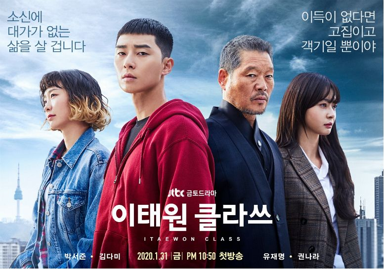
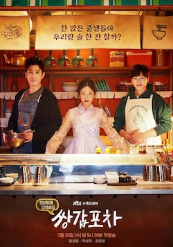
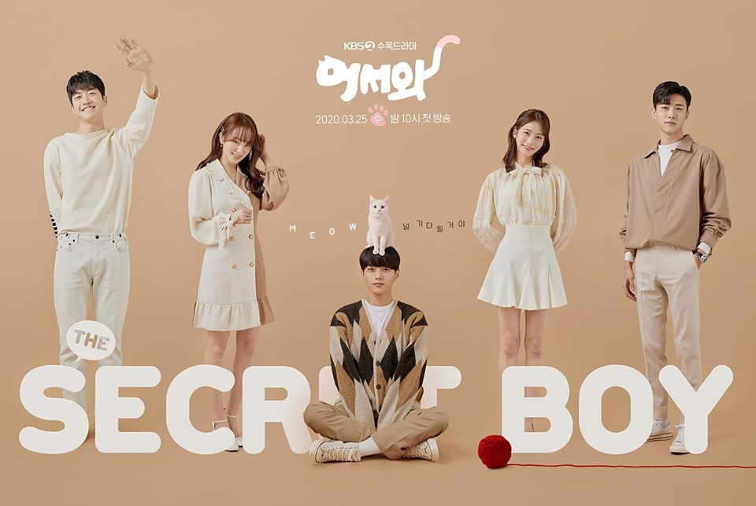
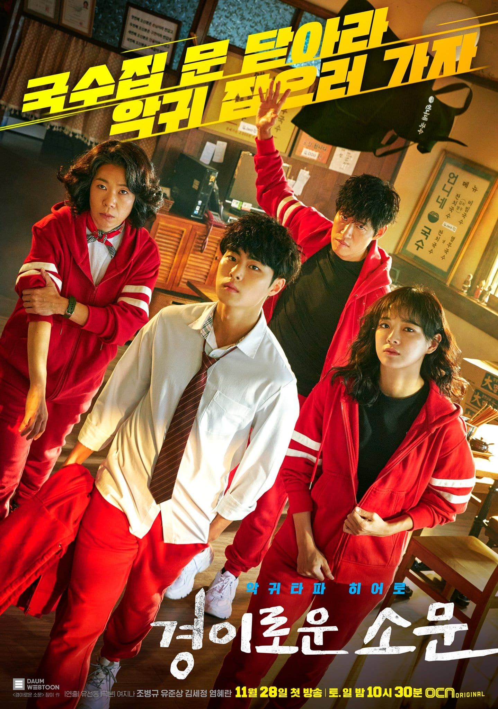

Selain True Beauty, Ini Drama Korea Adaptasi Webtoon yang Wajib Kamu Tonton
Konten ini diproduksi oleh kumparan K-Pop 13 November 2020 11:49
Di 2020, banyak drama Korea berbagai genre yang diadaptasi dari webtoon. Webtoon yang diangkat kebanyakan populer, sempat viral, dan meraih jutaan pembaca dari berbagai negara.
Menarik, 'kan, bisa melihat para karakter dimainkan oleh aktor dan aktris ternama Korea Selatan?
Nah, ini dia rekomendasi drama Korea adaptasi webtoon yang wajib masuk daftar tontonan kamu. Ada apa saja? Yuk, simak!
Itaewon Class
 Sampai sekarang, Itaewon Class masih dianggap drama terbaik di 2020 oleh sebagian orang karena pesan moral, fashion ikonik, dan plot twist-nya. Drama ini diadaptasi dari webtoon populer karya Jo Gwang Jin yang berjudul sama dan dibintangi Park Seo Joon, Kwon Nara, sampai Kim Da Mi.
Itaewon Class mengisahkan Park Saeroyi (Park Seo Joon) yang berusaha membalas dendam dan mengalahkan Jangga, perusahaan makanan terbesar di Korea Selatan. Sebab pemilik Jangga, Jang Dae Hee (Yoo Jae Myung), telah meremehkan prinsip kebenaran Saeroyi, menutupi alasan kematian ayahnya, dan membuatnya masuk penjara.
Saeroyi bermimpi untuk mengalahkan Jangga dengan membuat kedai makanan DanBam. Meski harus melewati ujian, rintangan, sampai diminta menyerah oleh cinta pertamanya Oh Soo Ah (Kwon Nara), balas dendam yang terlihat mustahil itu mulai terwujud berkat artis media sosial Jo Yi Seo (Kim Da Mi).
Mystic Pop Up Bar
Diangkat dari webtoon populer Ssang Gap Pocha karya Bae Hye Soo, Mystic Pop Pop Up bar menceritakan Wol Ju (Hwang Jung Eum), yakni pemilik pocha (bar kaki lima) misterius yang berusia 500 tahun. Wol Ju harus menyelesaikan masalah dari 100 ribu orang yang berbeda untuk bertahan hidup, tidak lenyap, dan jatuh ke neraka.
Suatu hari, ia tak sengaja bertemu Kang Bae (Yook Sung Jae) yang bisa melihat pikiran terdalam orang lain saat menyentuh mereka. Kemampuan ini dimanfaatkan Wol Ju untuk menyelesaikan masalah pelanggan pocha demi misinya, dengan bantuan detektif akhirat Chief Gwi (Choi Won Young).
Dinner Mate
Karena bekas luka hubungan masa lalu dan terbiasa sendiri, psikiater Kim Hae Kyung (Song Seung Hoon) dan sutradara Woo Do Hee (Seo Ji Hye) enggak lagi mau pacaran. Tapi gara-gara pertemuan konyol, mereka berujung jadi teman makan dan merasa nyaman satu sama lain.
Saat Hae Kyung dan Doo Hee mulai menjalin hubungan, mantan pacar keduanya datang lagi dan bikin mereka ragu untuk lanjut pacaran.
Drama yang diadaptasi dari webtoon Shall We Eat Dinner Together karya Park Shin In ini bakal mengajarkan penonton, bahwa cinta tak harus memiliki dan enggak ada salahnya buat move on.
How to Buy a Friend

Misterius, unik, dan punya sinematografi menarik, How to Buy a Friend diadaptasi dari webtoon Gyeyakwoojung (pertemanan kontrak) karya Kwon Laad. Drama ini menceritakan Chan Hong (Lee Shin Young) yang memulai pertemanan kontrak dengan petarung legendaris Dong Hyuk (Shin Sung Ho) gara-gara puisi yang ia buat.
Menurut Dong Hyuk, puisi Chang Ho punya petunjuk yang bisa menguak rahasia kematian pacarnya. Cewek populer Eom Se Yoon (Kim So Hye) yang naksir Chan Hong pun ternyata terlibat dengan kasus kematian itu.
Memorist

Dong Baek (Yoo Seung Ho) adalah detektif dengan kemampuan supernatural yang memasuki kepolisian dengan niat tersembunyi. Saat tengah mewujudkan niat ini ia bertemu dengan penyelidik profil kriminal jenius, Han Sun Min (Lee Se Young), dan bergabung untuk menangkap pembunuh berantai misterius.
Memorist merupakan adaptasi karya webtoon milik Jae Hoo. Drama bergenre misteri thriller ini turut dibintangi Cho Seong Ha, Ko Chang Seok, Yun Ji On, hingga Jun Hyo Seong.
Meow, The Secret Boy
Meow, the Secret Boy merupakan adaptasi dari webtoon Welcome karya Go Ara, dan menceritakan seekor kucing bernama Hong Joo (L Infinite) yang berubah jadi manusia secara misterius.
Ia diadopsi oleh Sol Ah (Shin Ye Eun) karena permintaan Lee Jae Sun (Seo Ji Hoon), dan Sol Ah enggak tahu kalau Hong Joo bisa berubah jadi manusia.
Sol Ah lama-lama menyukai Hong Joo meski awalnya benci kucing. Tapi di saat ia mulai naksir versi manusia Hong Joo, Jae Sun malah mengaku suka pada Sol Ah.
Sol Ah lama-lama menyukai Hong Joo meski awalnya benci kucing. Tapi di saat ia mulai naksir versi manusia Hong Joo, Jae Sun malah mengaku suka pada Sol Ah.
Mana yang Sol Ah pilih? Cinta pertamanya atau Hong Joo si jelmaan kucing yang paling mengerti perasaan Sol Ah?
Backstreet Rookie

Bergenre komedi romantis, Backstreet Rookie diangkat dari webtoon berjudul Convenience Store Saet Byul karya Hwalhwasan dan Geumsagong.
Pusat drama ini adalah Choi Dae Hyun (Ji Chang Wook), yang tak sengaja bertemu gadis SMA bernama Jung Saet Byeol (Kim Yoo Jung) dan geng nakalnya. Saat itu, Saet Byeol memerintahkan Dae Hyun untuk membelikannya rokok, meminta nomor teleponnya, bahkan sempat menciumnya seperti gadis dewasa.
Empat tahun kemudian, Dae Hyun berhenti dari pekerjaannya di perusahaan dan memutuskan membuka minimarket. Tak disangka, Saet Byeol muncul di hadapannya sebagai pelamar kerja paruh waktu, dengan pribadi yang penuh moral.
Amazing Rumor
Di Amazing Rumor, tim pemburu roh jahat berkemampuan khusus yakni Counter, menyamar sebagai karyawan restoran mi. Di antaranya adalah Do Ha Na (Kim Se Jeong) yang bisa merasakan keberadaan roh jahat dari ratusan kilometer, dan melihat ingatan orang saat menyentuh mereka.
Drama OCN ini turut dibintangi Jo Byong Gyu, Yoo Jun Sang, Yum Hye Ran, dan Ahn Seok Hwan. Amazing Rumor diadaptasi dari webtoon berjudul sama karya Jang Yi, serta dijadwalkan mulai tayang pada 28 November 2020 tiap Sabtu dan Minggu.